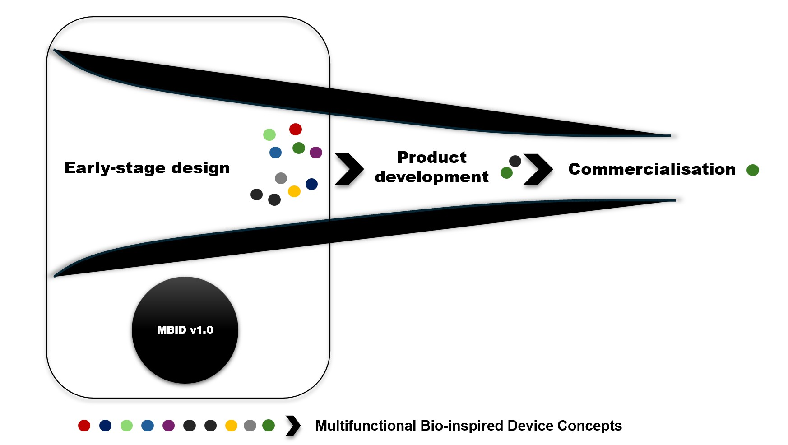

APPLICATION
MBID v1.0 operates at the early stages of innovation, supporting concept generation, embodiment development, and initial functional verification. Concepts demonstrating technical feasibility and strategic relevance can then progress to detailed product development and commercialisation. The framework enables the structured combination of non-obvious or intentionally selected functions, resulting in distinctive multifunctional devices and structural concepts.
DESIGN SPACE AND APPLICATION SCALE
The MBID v1.0 design space is characterised by unstructured operating environments, the need to integrate multiple, often conflicting functions, constraint-heavy design contexts, and micro- to mesoscale solution spaces where scale-dependent physical laws govern feature-level function generation.
MBID v1.0 is particularly suited to problems where functionality emerges primarily from geometric and material feature interactions across scales rather than from assemblies of discrete components. It is therefore most directly applicable to design problems satisfying the above characteristics, regardless of industrial sectors. Examples include medical and surgical devices, bio-inspired robotic systems, and technologies for resource-constrained environments.

